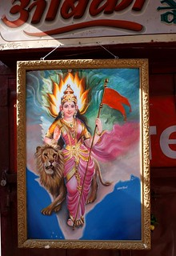

विश्व पटल पर राष्ट्र हमारा
राष्ट्र कृत्रिम रूप से नहीं बनता। हमारे राष्ट्र का अस्तित्व संस्कृति और लोगों पर आधारित है, जो शक्ति में निहित राष्ट्र-राज्य की अवधारणा से पूरी तरह भिन्न है। हमारी संस्कृति, विभिन्न भाषाओं, क्षेत्रों, संप्रदायों, धर्मों, जातियों और रीति-रिवाजों के बावजूद हमें एक सामान्य धागे में बांधती है, हमारे शाश्वत जीवन मूल्यों से उत्पन्न होती है, जो मानवता को एक वैश्विक परिवार के रूप में देखती है। यह राष्ट्र की भावना हमारे अनुभवों, प्रयासों और सत्य की समझ से आकार लेती है। तभी एक सच्चा राष्ट्र विकसित होता है, जो विश्व में मान्यता प्राप्त करता है और वैश्विक जीवन में सार्थक योगदान दे सकता है।
[09/10/2024]